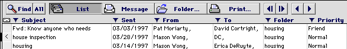
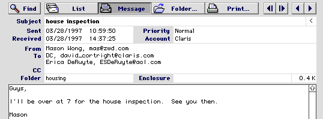

Emailer Archive
Version 3.0
November 12, 1997
by Dan Crevier and
David Cortright
Download
Thre are two versions available for download:
Overview
This package allows you to archive email messages from Claris Emailer 2.0 to a Claris FileMaker Pro 3.0 (or later) database and back. This is useful if you have messages (or even entire folders) that you no longer need to access in Emailer, but you want to keep these messages in case you need to reference them in the future. As an example you can archive messages from projects that have been completed.
To use this package, you need Claris Emailer 2.0 and AppleScript (which comes with MacOS 7.5 or later) or Frontier. Additionally, if you have FileMaker Pro 3.0 (or later), you can use the regular database version. If you do not have FileMaker Pro 3.0 or later, there is a stand-alone application version that will support all the functionality of the FileMaker Pro version; however, you will not be able to edit the database (for example, turn on indexing in the message body so searches within the message body will be faster).
Updating from a Previous Version of the Database
If you used a previous version of this database, open the new database and choose "Import Records" from the File menu. Select your old database in the Open dialog, and after you make sure the fields map properly, click Import.
Archiving Email with AppleScript
Open the database
Select "Transfer to Archive" from the Emailer script menu
If you are reading a message, that message will be converted
If a browser window is front-most, the messages selected in the
browser will be converted
If you want to archive an entire folder, press Command-A in Emailer to select all of the messages in the open folder before selecting the transfer script.
Note: After the messages have been transferred to the archive, they will still exist in Emailer. If you want to delete them, you will have to do it manually (see Customizing the Archive for a tip on how to delete message automatically after archiving).
Troubleshooting: If the script asks you to find the application "Emailer" or the application "FileMaker", that just means that your particular application may have a slightly different name than the script was expecting. Just browse your hard drive and select the proper application (if you do not have FileMaker, you should select the "Emailer Archive Solution" application instead of FileMaker).
Archiving Email with a Mail Action
Create a mail action and have it run the "Transfer to Archive" AppleScript as its action. Caution: unless you specify a database in the script, the database needs to already be open in Emailer when the script is run. See the Customizing the Archive section below for information on how to get the database to open automatically.
Using Frontier instead of AppleScript
Import the workspace.MessagesToFMPro script into Frontier. You
might want to move it into Emailer's shared menu.
Open the database
Select the script from the Script menu, or run it from Frontier
If you are reading a message, that message will be converted
If a browser window is front-most, the messages selected in the
browser will be converted
You can move messages from the Archive to Emailer with the workspace.FMProToEmailer script.
Transferring Messages from the Archive into Emailer
The "Transfer to Emailer" menu item (which is in the database's Script menu) copies all of the "found" records in FileMaker to the folder currently being browsed in Emailer 2. If no folder is currently open then the messages are copied to the In Box. One method of using it is to use the database's "Show Folder" button to find all of the messages in a folder. Then, go to, or create the corresponding folder in Emailer, and then run the script. Repeat this for each folder in the database.
Working with the Archive
The database has two main views: the List view and the Message view. The List and Message buttons switch between these two views. The List view shows a list of all of the messages, with a preview of the selected messages body at the bottom. The Message view shows only a single message with all of the information about the message. In both views, you can use the four rightmost buttons to go to the First, Last, Previous, and Next message respectively.
When in the List view, rather than selecting a message and then opening it in Message view, you can simply click on the status area for that message (the left most column with the light gray background).
The status area contains ASCII representations of the status icons in Emailer. The mapping is:
Incoming Messages
|
<nothing> |
read |
|
* |
unread |
|
< |
replied |
Outgoing Messages
|
<nothing> |
sent |
|
d |
draft |
|
Q |
queued |
|
! |
addressing problem |
List View
In the List view (Figure 1), you can sort the messages by any column by clicking on the column label. So to sort by Subject, you would click on the word "Subject" directly below the "Find" and "All" buttons. You can also filter the List view based on the attributes of any message. In FileMaker, the current message is indicated by the thin black rectangle to the left of the status column (in Figure 1, the current message is "housing inspection"). By clicking on the filter triangle to the left of each column label, you can search for only those messages that match the value of the current message. For example, if you clicked on the filter triangle next to the From column in Figure 1, you would find all messages that are from Mason Wong. These buttons are useful for finding a message thread (all messages with the same subject), or all messages to or from a given person.
You can also perform your own customs searches and sorts using the Sort command in FileMaker (Cmd-S).
Figure 1. List View

Message View
This view shows more detail about each message than the List view. You can also modify the message in this view by clicking on the field and entering your changes. For example, you could change the Subject of a message to more clearly summarize the message content, or you could remove unnecessary headers from the body of a message.
One function that is not obvious is the ability to click on field labels to filter your messages. This works just like the filter triangles in the List view, so clicking on the "Priority" label in Figure 2 would find all messages with the priority "Normal." The Received, CC, and Enclosure labels are not clickable.
Figure 2. Message View

Find button
The Find button allows you to search for messages using the FileMaker standard query by example." In query by example, you type in the values in the fields that you would like to search for, and then press the Continue" button. For example, to find all messages with "database" in the subject, type ";database" in the subject field and press "Continue." (Tip: if you want to find messages with 2 different criteria, for example account AOL or account Internet, then press Cmd-D to duplicate the search criteria). In the List view, the "All" button will restore the list to show all of the messages in the archive.
Folder button
The "Folder" button gives you a pop-up menu of all of the folders and lets you display only the messages in that folder. Another way to do this is to select a message in the List view and press the triangle filter button next to the folder label.
Print button
The "Print" button prints the current message (with a limit of about 10 pages). Caution: Don't forget to look at the FileMaker Pro options in the Print dialog; you could accidentally end up printing your entire archive!
Script menu
Notice that the first 10 scripts in this menu mirror the buttons that appear across the top of the List and Message views. You can use the associated keyboard commands to activate these buttons instead of the mouse. For example, you can use Cmd-9 and Cmd-0 to quickly browse a set of messages.
The next script, Export to Emailer, will move the current set of found messages back to Emailer. These messages will still remain in your archive after they are moved.
The next two scripts, Reply in Emailer and Forward in Emailer, allow you to work with messages in the archive without having to move them back into Emailer.
The final script is a simple "About" dialog.
Customizing the Archive (for advanced users)
There are many ways in which you can tweak the scripts or the database to suit your particular needs. Here are a few suggestions:
You can index the message body in the database so that searches on that field will be faster. The drawback is the database will be bigger (50% or more) and it will take a bit longer to archive each message. To do this, you must have FileMaker Pro. With the database open in FileMaker Pro, select Define Fields. Select the Message field, click the Options button and then click the Storage Options button. Turn on indexing, and then click OK, OK, and finally Done.
The "Transfer to Archive" script can be modified to automatically open the Archive database before importing the messages. This is useful for mail actions where you might not have the Archive open, and also if you want multiple scripts for multiple Archives. Open the script with the Script Editor and modify the property pDatabaseFile to the full path to the database file. Be sure to enclose the path in quotes, i.e. "Hard Drive:Applications:Claris Emailer:Emailer Archive"
You can also modify the "Transfer to Archive" script so that messages are deleted in Emailer after they are archived. Open the script in the Script Editor. Scroll down to the bottom of the TransferMessage routine, and add the following line just before the end:
tell application "Claris Emailer" to delete theMsg
Warning: Be sure you understand the consequences before doing this. Deleting is forever
You can store the entire folder path of each message rather than just the name of the folder. To do this, open the "Transfer to Archive" script in the Script Editor and change the property pExpandFolders to true. After you save the script, the messages you archive will have the full path (though any that you have previously archived will still only have the name).
Acknowledgements
Logistics
This software is provide as freeware. No warranty is expressed nor implied. The use of this software is at your own risk, and the authors assume no responsibility for the results of said use. This package may be distributed freely, as long as it is distributed in its full form and as long as no compensation is received in exchange for the distribution. In addition, you must reproduce and include with each copy this notice, the trademark, copyright and any other proprietary notices that are included with the software. The database and the accompanying components may not be used, in whole or in part, without the authors' expressed written consent. Some components are the intellectual property of other authors; please refer to them for questions regarding the use and distribution of these components outside of this package. This package is not officially associated with Claris Corporation, and as a result Claris will not officially support the use of this software with Claris Emailer. Subject to the terms of this freeware license, this software is protected by copyright law. Installation of this package indicates an acceptance of these terms.
OK, now that that's out of the way... If you like this package and want to do something to show your appreciation, here are some ideas:
Release Notes
Version 3.0b --11/14/97
Version 2.0.3 -- 5/14/97
Provided alternate scripts for users with date in dd/mm/yy date
format
Worked around bug in Emailer that would cause it to crash on messages
with long subjects
Version 2.0.2 -- 3/10/97
Fixed bug when system's time format is 24 hour (I think)
Importing to Emailer no longer leaves a blank recipient at the
end
Exporting to FMPro with the Messages->FMPro script is now much
faster, thanks to Steven Riggins
Made Frontier scripts
Version 2.0.1 -- 3/3/97
Fixed bug for dates with days < 10
Fixed bug for October-December
Version 2.0 -- 2/25/97
Made version for Emailer 2.0
Added support for FileMaker -> Emailer conversion
Version 1.0 -- 7/4/96
First release